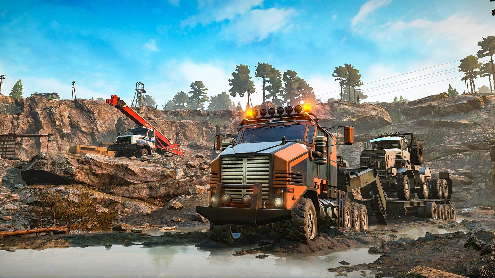
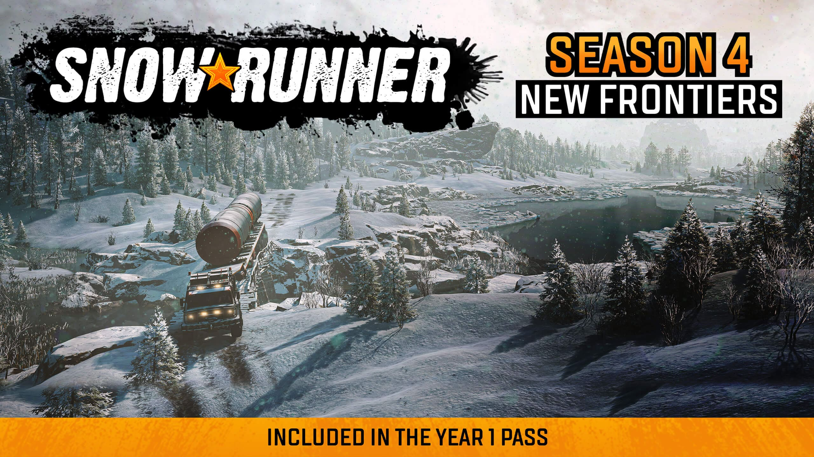
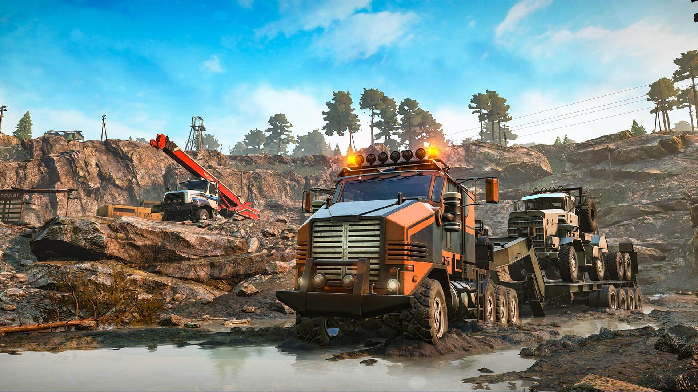
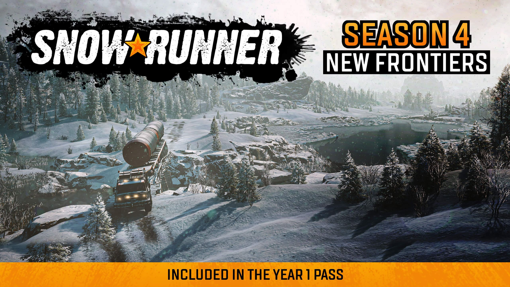
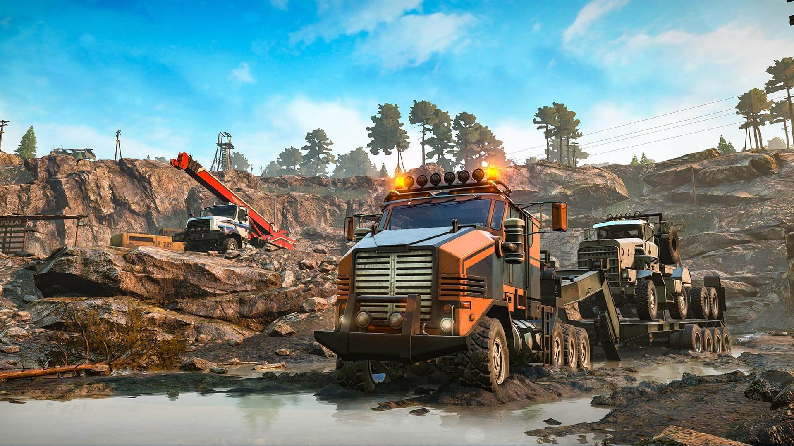
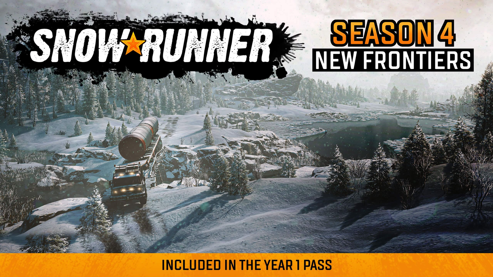

Першою грою цієї лінійки була гра Spintires (2009). Гра була створена для конкурсу Havok Physics Innovation Contest компанії Intel, який проходив у 2008—2009 роках. Spintires є симулятором їзди по бездоріжжю. Гравцю потрібно возити вантажі на радянських вантажних автомобілях. Їздити прийдеться по російській тайзі, де немає асфальтованих доріг, а є тільки лісні важкопрохідні просіки Головна особливість гри — деформована дорожня поверхня, яку надає реалізувати фізичний рушій Havok. Автомобілі можуть залишати після себе колію на дорозі. Особливості гри:
Наступною версією цієї гри був MudRunner.Він мав два офіційні доповнення : Chernobyl Bundle, American Wilds. Гра піддтримувала моди, проте щоб грати з друго використовуючи модифікації доводилось обходити стандартні алгоритми. Модифікацій існує дуже багато: це покращення фізики, графіки, мапи,звуки та модифікації авто, як на старі так і нові.
SnowRunner предстала перед геймерами 28 квітня 2020 р. Вона стала свіжим подихом бо мала покращену фізику, графіку, техніка тепер отримала якісну панель приборів у кожного своя. Повністю нова економіка. Усі локації пов'язані між собою. Теніку та покращення можна знаходити на мапі. Ті хто не люблять ніч можуть перемотати час. Чим більше фар є у техніки тим краще їхати вночі. Покращення бамперів тепер надає додаткового захисту для техніки.

